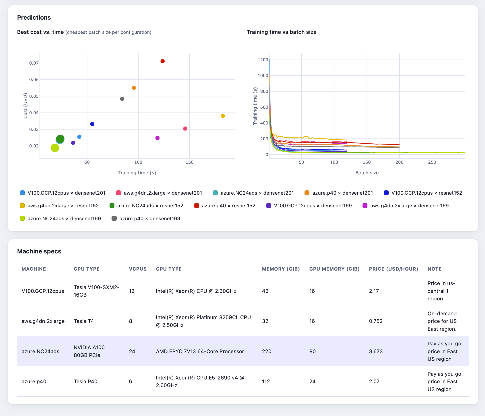

Predicting CNN training time and cost on cloud GPUs
2024-10-25Choosing a cloud GPU machine and batch size for convolutional neural network (CNN) training is difficult without knowing how these choices affect training time and cost. Poor choices can waste both time and money, while testing every combination requires additional resources. To help users make an informed choice before starting a long training run, we developed a web application that predicts CNN training time and cost on different cloud GPU machines across a wide range of batch sizes.
Predict CNN training time and cost

Accurate predictions across many batch sizes matter because CNN training speed does not change in a simple, predictable way as the batch grows. A batch is the group of examples processed in one training iteration: larger batches mean fewer iterations per epoch, but each iteration may take longer. Small changes in batch size can also cause abrupt changes in execution time, so the largest batch that fits in GPU memory is not necessarily the fastest. Comparing predictions for the same number of examples helps identify a batch size that reduces epoch time and cloud rental costs.
The application lets users compare predicted training time and cost for the available PyTorch CNN architectures on several types of cloud GPU machines. Rather than requiring a separate trial training run for every batch size, it provides estimates across a range usually limited by the target GPU's memory. These estimates help users choose a suitable machine and an efficient batch size together. The underlying approach can also accommodate new CNN configurations, although the application currently limits architecture selection to the CNNs available in PyTorch.
The application runs on two separate machines: a web server provides the frontend, while a second machine hosts the Python backend and a database of benchmarks. The backend uses stored benchmarks to calculate predictions and can automatically launch AWS GPU instances to benchmark missing convolutional layer configurations. New measurements remain in the database for future requests, including requests for other CNNs that share those layer configurations. Over time, benchmarks have been accumulated for all architectures currently available in the application, so normal use now relies on the stored data without the need to run benchmarks.
Our prediction approach combines measured convolution performance with regression, as described in our paper Using Benchmarking and Regression Models for Predicting CNN Training Time on a GPU. We use DNNMark to measure the execution time of convolutional layer operations performed by NVIDIA's cuDNN library. These benchmarks provide estimates for the convolutional part of training, while a regression model built with XGBoost uses aggregated parameters of the other layers to predict the remaining time. Combining the two gives a prediction for one training iteration, which is converted into epoch time for the chosen number of examples and each batch size. In our evaluation experiments, average prediction errors were around 4–6%, depending on the machine; for some machines, the errors were comparable to the natural variation between repeated training runs.
The application helps users choose a batch size and cloud GPU machine to minimise CNN training time and cost. By comparing predictions for the same amount of training data across machines and batch sizes, users can identify the fastest options, find the most economical ones, and weigh the trade-off between speed and expense. Accurate predictions make this choice possible before committing resources to long training runs, helping users spend less time and money on CNN training.